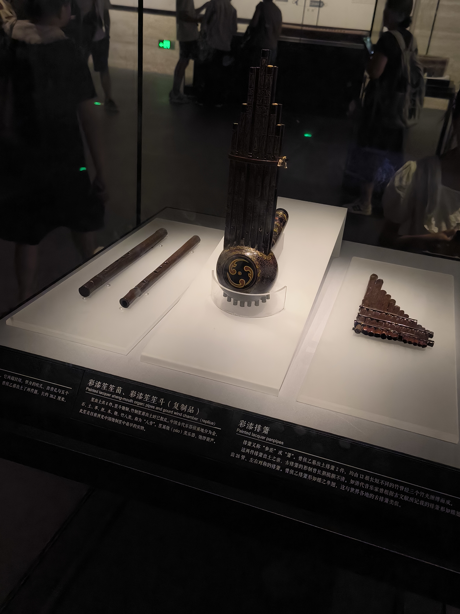

原来我还没有放弃自己的童真
越长大越孤单现在反倒体会的更深了，所以我觉得现在的这段时间可能是为数不多， 或者也可能是在将来永远持续的一段生活。所以抓紧事件去提升自己的能力， 因为人的身体素质和学习能力也是在不间断的下降，所以一定要保持学习的劲头。
PS1：生活中的大小事件
2024-6-18 拿到驾照
算是了结了一段不大不小的事情吧，之前总觉得2年后的自己会略微成熟一点，所以在考试的时候不会再紧张。现在看来的话其实差距不大，不管什么时候自己就是自己， 有些事情自己不做就会堆积到之后的自己身上，所以要趁年轻多为之后的自己做一些事情。（其实你真的挺棒了，走到现在真的很棒了😀😀😀！）
之前一直期待之后的自己会有多么的厉害， 现在看来给现在的你造成了不少的伤害。那么就需要对你说一声对不起啦，之后绝对不会再让你经历这些，我会把我该处理的事情处理完毕的！所以放心向下走，便会遇到良人好好表现！
2024-7-4 入职云智
入职后的生活其实不是怎么顺利， 首先便是身体上的， 感觉浑身疼， 入职第一天晚上倒头就睡了， 看来逃了很久的命运还是没逃掉，因为我选择路可能还是赚钱。可是上班之后的生活呢？？？👔👔👔每天算是忙忙碌碌，感觉像是虚度了光阴，但是光阴又是什么呢，我又能做些什么呢，这些我都不清楚。
我想我有必要去规律下自己的作息， 加强锻炼身体， 莫名的有种感觉身体在给自己发出预警。希望能够坚持下来吧。
2024-7-6 一个人在武汉漫游
这天一个人突发奇想想去看看黄鹤楼和武汉长江大桥，这两个点的人很多， 确实热闹。有小孩， 老人，夫妇， 情侣，大家貌似都对这个地方有向往，而我则是肆意漫游，我不清楚自己的方向， 仿佛武汉这个地方不属于我， 我只是一个简简单单的路人， 或许最终我会去到大城市， 或回到家乡，但是同时也不会忘记现在的自己， 一个独居时所有时间都属于自己的人。
2024-7-14 一个人去看神偷奶爸
算是我自己比较无聊的时候了， 喜欢一个人闲逛。

2024-7-27 和于大明周末happy
周末去了湖北省博物馆同时也去了足疗， 那个技师好像那个人啊，原来我还是忘不掉。


PS2：情感故障
好像又被发感谢信了，收到了结束的标志（就这样结束吧！）其实原本有心理准备的，但是还是咯噔了好几下，没想到还是来的这么快。傻胖还是老样子喜欢先给希望， 然后再亲手撕毁希望。
PS3：我期待的以后
这也是我最想思考的一段，同时也是影响着我最终发展的一段。
首先，最重要的一段应该是语言表达能力， 这一段最欠佳， 目前来说还是不知道该如何去解决， 但是我挺确定这里影响人的发展。
其次，自己以后的发展，其实不需要去太过思考这个事情， 在自己没有绝对把握前基本上都是在浪费时间， 所以不如提升自己的兴趣方面来的快。
最终， 孤独可能是你最喜欢的一个模式， 乐意孤独且享受孤独， 没有必要去做一些浪费时间的社交， 最终的结论就是：“怎么大家都在向前走， 你还在原地踏步？时间不允许你这么童真了！”。